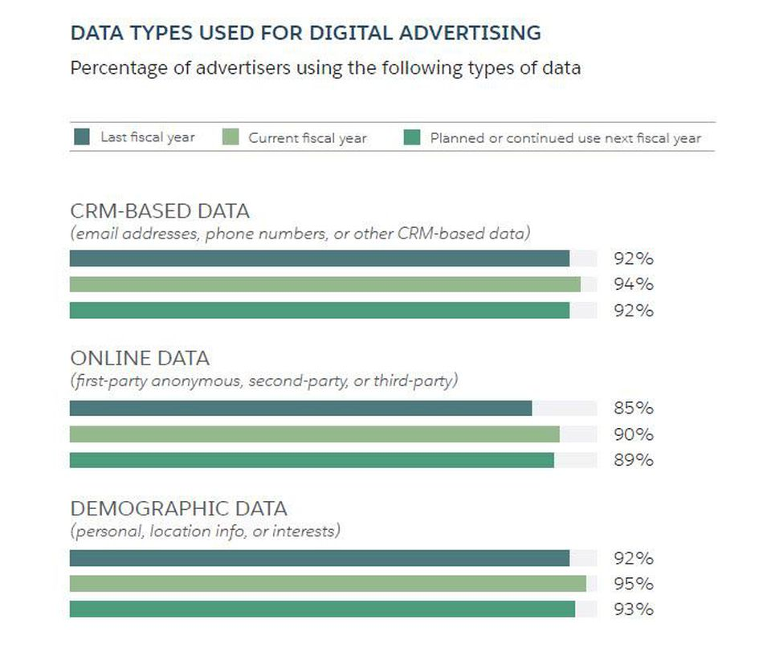

Mastering online advertising trends is the key to success in today’s age. There are popular trends amongst the internet in regards to social media being what reaches our generation the most. More than 40% of the planet’s population actively uses the internet, making it the main market for advertisers.
Read More
THE FUTURE OF ONLINE ADVERTISING

The Salesforce’s Digital Advertising 2020 Report that was published at the beginning of this year released the future plans and goals of today’s advertising. About nine hundred leaders of the world’s biggest advertisers participated in a survey in regards to their hopes, strategies, and concerns in order to continue improving their web data analytics.
Read More